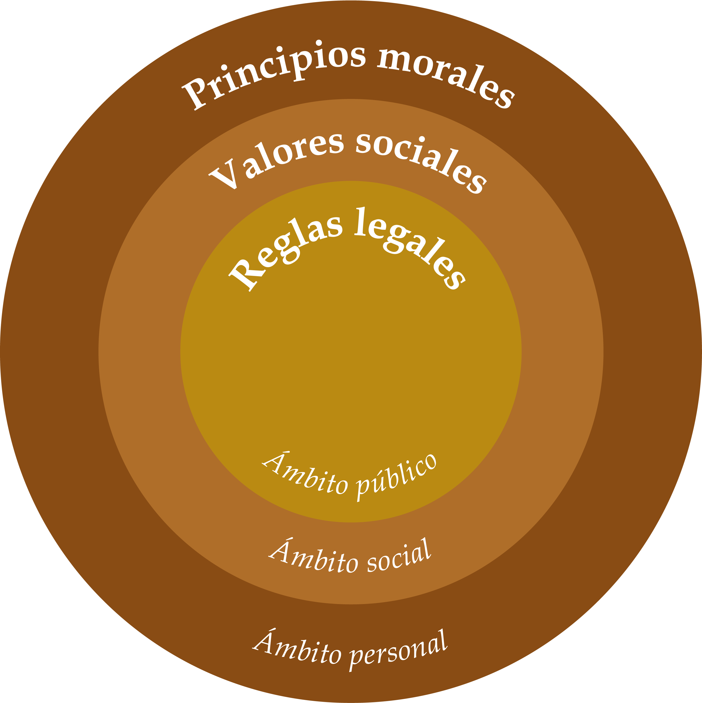
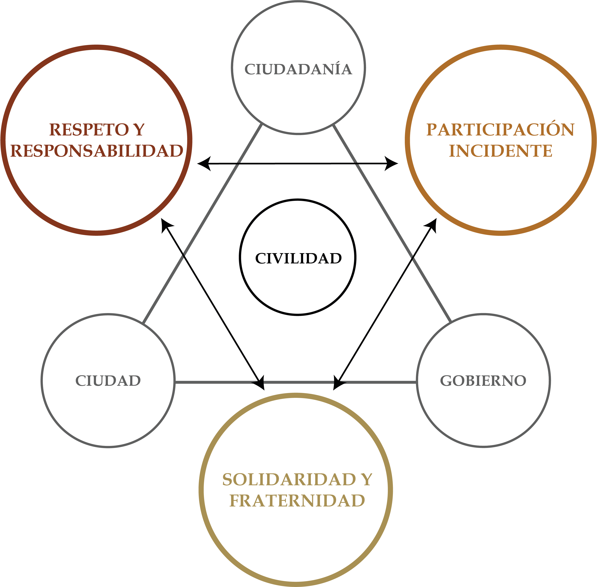
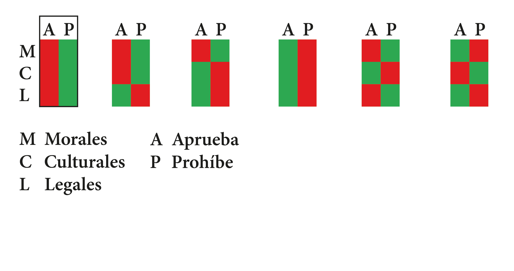

Unidad 1.1 Complejidad de las relaciones sociales
Los sistemas regulatorios buscan facilitar la convivencia, proteger el interés público y prevenir conflictos. No se limitan a imponer sanciones: también promueven el respeto, la solidaridad, la cooperación y la participación en la vida colectiva. Su expresión más importante es la civilidad: la capacidad de convivir, respetar las normas, reconocer a los demás y resolver pacíficamente las diferencias.
En las sociedades primitivas, las normas morales y sociales no estaban claramente diferenciadas. Los principios, los valores y las sanciones solían tener un origen predominantemente religioso 1. Con el tiempo, según el ámbito individual, social o político, se distinguieron tres categorías relacionadas y, en ocasiones, superpuestas: los principios morales o religiosos, los usos sociales y las normas jurídicas.
Estas tres clases de reglas suelen coexistir en una misma institución. En el matrimonio, por ejemplo, confluyen normas morales, sociales y jurídicas. Los principios morales y los valores sociales cambian lentamente, a veces durante décadas o siglos 2 , mientras que las normas legales se transforman con mayor rapidez en respuesta a los acontecimientos políticos.
En síntesis, los sistemas regulatorios integran principios morales, valores sociales o culturales y reglas legales orientan, en conjunto, el comportamiento y las relaciones entre las personas. Su distinción depende de los principios y valores que sustentan cada categoría y de la forma en que interactúan.
3.1. Principios morales
Toda sociedad se organiza a partir de principios que orientan sus modelos de relación. Los sistemas de valores justifican las reglas de conducta que se proponen a sus miembros. Los principios morales son convicciones internas que guían las decisiones y permiten distinguir entre el bien y el mal, o entre lo correcto y lo incorrecto. Por eso, mentir o acusar falsamente a alguien o robar puede producir un reproche o remordimiento interior, aunque nadie más lo sepa.
Estos principios nacen de la conciencia individual y orientan la conducta ética. No dependen de una imposición externa, sino de la convicción y la responsabilidad de cada persona. De manera semejante, las normas religiosas surgen de las creencias y preceptos de una fe y se cumplen por compromiso espiritual y doctrinal.
Immanuel Kant (1724-1804) afirmó: “Hay dos milagros que se destacan por encima de los demás: el cielo estrellado en lo alto del firmamento y la ley moral que todos llevamos dentro de nosotros” 3.
La palabra moral proviene del latín mos, moris, que significa “costumbre”. La moral reúne las creencias, los valores, las costumbres y las normas que orientan la conducta de una persona o de una sociedad. Los valores expresan lo que consideramos bueno, justo o deseable y sirven de base para nuestras decisiones. Entre ellos se encuentran la honestidad, la lealtad, la libertad, la igualdad, la solidaridad, el respeto y la tolerancia.
Aunque están estrechamente relacionados, principios y valores no son idénticos. Los principios son convicciones fundamentales sobre lo bueno y lo malo; los valores orientan la conducta en situaciones concretas. Actuar de acuerdo con ellos favorece la confianza y la buena reputación dentro del grupo. A partir de estas valoraciones, las personas suelen calificar las conductas como buenas o malas, lo que alimenta el juicio moral.
El mal forma parte de la experiencia humana: el dolor, la enfermedad, la soledad, la injusticia y el miedo se perciben desde la infancia4 . Sin embargo, la educación, la cultura, las experiencias y las creencias hacen que los valores varíen entre personas y sociedades, tanto en su contenido como en su jerarquía.
3.1.1. Respeto y responsabilidad
En una sociedad compleja y multicultural, el respeto y la responsabilidad establecen límites necesarios para la convivencia. El respeto supone reconocer al otro y estar dispuesto a dialogar con franqueza5 . Al igual que la moral, se aprende en la familia y se extiende a la comunidad y a la sociedad.
3.2. Valores sociales o culturales
Los valores sociales o culturales son pautas de conducta aceptadas por una comunidad. Su función es favorecer una convivencia ordenada y respetuosa, de acuerdo con la distinción social entre lo apropiado y lo inapropiado. La convivencia exige acuerdos básicos sobre cómo organizarnos, qué podemos esperar de los demás y qué esperan ellos de nosotros. Estas pautas reducen la arbitrariedad y ofrecen un orden mínimo común6 .
Para pensadores romanos como Cicerón (106-43 a.C.), el alma podía cultivarse como se cultivan los frutos o las hortalizas. De esta idea proviene la palabra cultura, entendida como el conjunto de valores orientados a mejorar el espíritu humano y la convivencia. En sociedades numerosas, heterogéneas y diversas, los valores sociales o culturales son indispensables. Sin acuerdos básicos expresados en normas de convivencia, la vida colectiva tendería al desorden.
Las normas sociales son establecidas por un grupo o una comunidad para regular sus interacciones. Su incumplimiento no genera, por regla general, sanciones legales, pero sí puede provocar rechazo o desaprobación social. La cultura fija los parámetros de conducta de los grupos. Las sociedades con normas sociales más claras y exigentes pueden estar más dispuestas a cumplir la ley, mientras que aquellas con pautas más laxas suelen enfrentar mayores dificultades para aplicarla.
Las costumbres y normas sociales definen lo aceptable y lo inaceptable dentro de un marco cultural, entendido como “el conjunto de valores y creencias que dan forma, orientan y motivan el comportamiento de las personas” 7. En la práctica, ese marco se expresa mediante normas sociales.
Los valores sociales o culturales pueden entenderse como el conjunto de normas y deberes que orientan a los miembros de una comunidad hacia una convivencia pacífica, armónica y constructiva. Este conjunto de pautas indica cómo relacionarse con los demás de acuerdo con los valores, las tradiciones y las costumbres predominantes. Así, ayudan a definir qué conductas se consideran correctas o incorrectas en una sociedad.
En otras palabras, las normas sociales son expectativas compartidas sobre cómo actuar en determinadas situaciones. Buscan favorecer la vida en comunidad y proteger valores como la seguridad, la justicia y la igualdad.
3.2.1. Solidaridad y altruismo
En el ser humano conviven impulsos solidarios y egoístas. Aunque protegemos nuestros intereses, también podemos anteponer los del grupo al que pertenecemos. Somos capaces de cooperar, amar, actuar con generosidad e incluso, en situaciones extremas, sacrificarnos por los demás o por los nuestros 8. La reciprocidad guía con frecuencia la conducta humana: “si tú me das, yo te doy; si me castigas, yo te castigo”. Esta dinámica crea lazos entre los miembros de una sociedad.
La solidaridad y el altruismo dependen de la confianza, un elemento esencial para la cooperación y el funcionamiento social. Cuando los ciudadanos confían en la autoridad, están más dispuestos a colaborar con ella. La confianza constituye la base de la solidaridad y genera un círculo virtuoso: si confío en otra persona, la trato bien; ese trato favorece una respuesta semejante y confirma mi confianza inicial. El resultado se produce, en parte, porque contribuimos a crearlo 9. Por el contrario, la desconfianza puede propagarse y formar un círculo vicioso: espero que el otro me haga daño, lo trato mal, recibo una respuesta negativa y confirmo mi sospecha inicial. Así, ambas partes terminan perjudicándose.
Cuando las solidaridades se expresan, las sociedades construyen una espiral ascendente: confianza, acatamiento a las leyes, convivencia y bienestar
3.3. Reglas legales: las leyes
Las reglas legales expresan acuerdos generales sobre la conducta necesaria para vivir en sociedad. Establecen derechos y obligaciones, protegen el orden, la seguridad y el bienestar común, y se fundamentan en la distinción entre lo justo y lo injusto.
Para proteger la vida, la honra, los seres queridos y los bienes, y para mantener un orden social estable, los seres humanos crearon el Estado. Esta forma de organización es el resultado de una larga evolución de la convivencia y se estructura mediante un sistema coherente de normas y leyes. La Declaración de los Derechos del Hombre y del Ciudadano de 1789 establece:
La ley es expresión de la voluntad de la comunidad. Todos los ciudadanos tienen derecho a colaborar en su formación, sea personalmente, sea por medio de sus representantes. Debe ser igual para todos, sea para castigar o para premiar; y siendo todos iguales ante ella, todos son igualmente elegibles para todos los honores, colocaciones y empleos, conforme a sus distintas capacidades, sin ninguna otra distinción que la creada por sus virtudes y conocimientos.
La regulación jurídica busca impedir que las acciones individuales o colectivas lesionen a otros y, al mismo tiempo, crear condiciones para la cooperación y el progreso social. Las normas jurídicas son disposiciones dictadas por una autoridad reconocida para regular la conducta en un ámbito determinado. Son obligatorias y su incumplimiento puede generar sanciones.
La ley ordena, autoriza, prohíbe o sanciona. Como explica el constitucionalista Juan Carlos Esguerra, “la ley juridifica las pautas de conducta que se prescriben para gobernantes y gobernados en busca de construir un orden social en el que coexistan debidamente los derechos y el poder” 10 . Por medio de las leyes, el Estado busca brindar seguridad y bienestar. Rousseau (1712-1778) sostenía que la ley emana de la voluntad general, es decir, de un interés común orientado al bien público 11.
Las leyes son normas expedidas por el poder legislativo para regular la vida en sociedad. En los regímenes democráticos, delimitan lo permitido y lo prohibido y buscan proteger el bienestar común. La obediencia a la ley también se apoya en consideraciones morales y normas culturales que reconocen la necesidad de regular la convivencia, evitar daños y favorecer la cooperación 12. En términos generales, el derecho puede definirse como el ordenamiento jurídico integrado por las leyes que regulan la conducta de las personas en un Estado 13 .
3.3.1. Participación
La democracia es un sistema de gobierno en el que la ciudadanía participa en los asuntos públicos. En Colombia, el artículo 40 de la Constitución de 1991 reconoce el derecho a intervenir en la conformación, el ejercicio y el control del poder político:
… Para hacer efectivo este derecho puede: elegir y ser elegido; tomar parte en elecciones, plebiscitos, referendos, consultas populares y otras formas de participación democrática; constituir partidos, movimientos y agrupaciones políticas sin limitación alguna: formar parte de ellos libremente y difundir sus ideas y programas; revocar el mandato de los elegidos en los casos y en la forma que establecen la Constitución y la ley; tener iniciativa en las corporaciones públicas e interponer acciones públicas en defensa de la Constitución y de la ley 14.
Con el desarrollo de la democracia, se han ampliado los derechos y mecanismos que fortalecen la participación ciudadana y su influencia en la conducción de los asuntos públicos.
Imagen 4. Sistemas regulatorios

Fuente: Elaboración Sociedad de Mejoras y Ornato de Bogotá con base en el modelo teórico de Antanas Mockus (2002).
3.4. Civilidad
La civilidad es un sentimiento poderoso, que no sólo permite tramitar las diferencias de manera pacífica, sino que construye sociedades armónicas. Es un concepto holístico cuyos pilares son: el respeto y la responsabilidad; la solidaridad y el altruismo y la participación efectiva.
La civilidad se refiere a los comportamientos y actitudes que se ajustan a las normas sociales y culturales orientadas a promover la convivencia. Este concepto abarca el respeto mutuo entre las personas, la solidaridad en las interacciones cotidianas y la consideración por los derechos y el bienestar de los demás. Asimismo, implica el compromiso con la preservación del bien común y el apoyo a las estructuras comunitarias que fomentan una coexistencia armónica.
Además, la civilidad se manifiesta en la capacidad de los ciudadanos para dialogar y debatir ideas de manera constructiva, respetar las diferencias y buscar consensos que beneficien a la colectividad. El concepto de ciudadanía surge de la interacción entre el individuo y el sistema jurídico-político legalmente constituido, que le reconoce derechos y le impone obligaciones. El respeto de las normas establecidas por las autoridades forma parte de la cultura ciudadana; por su parte, la civilidad nutre las relaciones armónicas entre los ciudadanos y permite tramitar las diferencias de manera pacífica. En el marco de la civilidad, estas se resuelven sin recurrir a la agresión. Dirimir las diferencias sin agredir al otro es propio de la civilidad.
Lévi-Strauss consideraba que la cultura es un sistema de comunicación: cuando surge la necesidad de que tú y yo nos comuniquemos, nace un sistema cultural; pero cuando esa comunicación se realiza con amor, nace el arte. La civilidad es la forma armoniosa en que interactúan los ciudadanos. Es el rasgo, el gesto que nos reúne y hace posible la aventura colectiva de alcanzar la convivencia en la ciudad moderna.
Imagen 5. Construcción de civilidad

Fuente: Elaboración Sociedad de Mejoras y Ornato de Bogotá“No hagas a los demás lo que no quieres que te hagan a ti” es un principio fundamental de la ciudadanía, mientras que “compórtate con el otro como quieres que se comporte contigo” constituye la base de la civilidad. El ejercicio fructífero, creador y vivificante de la ciudadanía se expresa en la civilidad, que emerge del respeto por el otro, la solidaridad, la fraternidad y la participación activa en las decisiones de la comunidad. La civilidad es la “fórmula maravillosa” que cimienta la construcción de una sociedad armónica, apacible, bondadosa e, incluso, amorosa.
Una sociedad compleja solo puede progresar si en ella florecen el respeto y la solidaridad, el interés por lo público, capaces de encauzar los conflictos. Precisamente, de la relación dialéctica entre cultura y arte emana la civilidad como principio básico de convivencia armónica. En el marco de una civilidad deliberante, incluyente y solidaria, se consolida la interrelación armónica entre lo público y lo privado, con miras a alcanzar el bienestar de toda la colectividad.
3.5. Concordancia o discordancia entre las normas
Podría considerarse que en un mundo ideal la armonía social se logra cuando los valores morales y las normas sociales refuerzan las disposiciones legales; cuando no existen conflictos entre los principios morales y lo dispuesto por la ley, su cumplimiento resulta más sencillo.
Imagen 6. Ejemplo de concordancia entre las normas

Fuente: Elaboración Sociedad de Mejoras y Ornato de BogotáEn la vida cotidiana pueden surgir conflictos entre la moral, las normas sociales y la ley. Algunos afectan a las personas de manera individual y otros trascienden al ámbito colectivo, generando debates sobre lo que se considera bueno, aceptable o permitido.
En el ámbito individual, la presión social puede llevar a una persona a actuar en contra de sus valores. Por ejemplo, alguien puede conocer los riesgos del consumo de alcohol y, aun así, beber por la presión de un grupo. El conflicto se agrava si luego conduce en estado de embriaguez, pues su conducta también vulnera la ley.
Otro ejemplo es el pago de sobornos a los policías de tránsito. Aunque una persona considere injusto un comparendo, ofrecer dinero para evitarlo no es socialmente aceptable y está prohibido por la ley. También existen conductas frecuentes que son socialmente reprochables, aunque no siempre tienen consecuencias morales o legales, un ejemplo es la impuntualidad, especialmente en el trabajo.
En el ámbito público, estos conflictos abarcan temas complejos relacionados con la vida, la igualdad, la justicia y la libertad. A continuación, se presentan brevemente algunos ejemplos: la informalidad, el aborto, la eutanasia y el divorcio.
Las ventas informales en el espacio público muestran cómo los valores morales y las prácticas socialmente aceptadas pueden entrar en tensión con la ley. Cuando existe esa contradicción, el cumplimiento de las normas puede debilitarse o incluso desaparecer, pues su control resulta más difícil.
El aborto es uno de los asuntos que generan debate entre la moral, la tradición y la ley. En algunos países está permitido y en otros se sanciona. En Colombia, la Sentencia C-055 de 2022 estableció que el aborto solo es punible después de la semana 24 de gestación. Este límite no se aplica a los tres supuestos previstos en la Sentencia C-355 de 2006: “cuando el embarazo pone en riesgo la vida o la salud de la mujer; cuando existe una grave malformación fetal que hace inviable la vida; o cuando el embarazo es resultado de violencia sexual, inseminación o transferencia no consentidas, o incesto” 15.
Aunque la Corte Constitucional se ha pronunciado sobre el aborto, el tema continúa generando debates jurídicos y rechazo social. Esto demuestra que una conducta aceptada por la Constitución y la ley no necesariamente es aprobada por todas las convicciones morales o culturales. Algo similar ocurre con la eutanasia, procedimiento mediante el cual una persona puede poner fin a su vida con asistencia médica cuando padece una condición grave que le causa sufrimiento intenso y afecta su dignidad. En Colombia está despenalizada, pero su práctica continúa siendo objeto de discusión moral y social. Pueden acceder al procedimiento las personas “en una situación de gravedad, por enfermedad o por accidente, en la que no hay esperanza de cura y que le cause intenso dolor o sufrimiento o que padezcan un intenso sufrimiento físico o psíquico” 16.
El divorcio también muestra que la moral individual y la aceptación cultural no siempre coinciden con la ley. Quienes se oponen a esta figura pueden intentar influir para modificar las normas que la permiten. Algunas instituciones religiosas han defendido restricciones al divorcio, aunque este se encuentra reconocido en la legislación civil de muchos países, incluido Colombia. Una decisión interna de una iglesia no modifica automáticamente la ley estatal, pero puede influir en el debate público.
Las instituciones jerárquicas, como las iglesias o los ejércitos, suelen exigir altos niveles de obediencia. En ellas, el cumplimiento del deber depende de la cooperación entre sus integrantes. Hannah Arendt analizó cómo la obediencia a órdenes superiores contribuyó a que ciertos individuos participaran en los crímenes cometidos contra el pueblo judío. Los experimentos de Stanley Milgram sobre la obediencia a la autoridad y de Philip Zimbardo mostraron que principios morales, como no hacer daño a otros, pueden ser desplazados cuando una persona obedece a una autoridad que considera legítima 17 .
Los juicios morales son más complejos de lo que parecen. Con frecuencia tomamos decisiones impulsadas por emociones que no analizamos de manera suficiente. Como explica Daniel Kahneman, la racionalidad suele exigir esfuerzo, mientras que las respuestas emocionales son rápidas y constantes18 . Por ello, conviene examinar los primeros impulsos, dialogar, argumentar, contrastar ideas y evitar conformarse con la primera impresión. Los dilemas del “Prisionero” 19 y del “Tranvía” 20 ilustran esta complejidad.
En 1982, James Q. Wilson y George L. Kelling formularon la Teoría de la ventana rota. Según este enfoque, controlar infracciones menores, como el vandalismo, la vagancia, el consumo de alcohol en público, el cruce indebido de peatones y la evasión de tarifas, puede contribuir a crear un ambiente de orden y legalidad, y en caso contrario aumenta el desorden y la criminalidad.
La complejidad está presente en todos los ámbitos de la vida humana y puede generar confrontaciones que dificultan la convivencia y debilitan el tejido social. La civilidad facilita las relaciones armónicas, la gestión de los conflictos y la construcción de una paz duradera.
Sección 1.2.1 Características del estado Sección 1.2.2 Evolución del Estado Sección 1.3.1 Democracia Sección 1.3.2 La organización del territorio colombiano Sección 2.1.3 Código Nacional de Seguridad y Convivencia Ciudadana - Ley 1801 de 2016 Unidad 3.1 La demografía Sección 4.2.2 Conflictos socioecológicos y justicia ambiental Sección 4.2.3 La sostenibilidad territorial en Bogotá Sección 4.3.1 Marco jurídico de desarrollo y Ordenamiento Territorial
Footnotes
-
Maurice Duverger. Instituciones políticas y derecho constitucional (Bogotá: Ediciones Ariel, 1970), 35. ↩
-
Ibid., 39. ↩
-
Citado por Howard Gardner. Arte, mente y cerebro. Una aproximación cognitiva a la creatividad (Buenos Aires: Editorial Paidós, 1987), 103. ↩
-
Mauricio García Villegas. El país de las emociones tristes (Bogotá: Ediciones Ariel, 2020), 214. ↩
-
Ibid., 89. ↩
-
Jaime Bermúdez Merizalde. ¿Por qué no cumplimos la Ley? (Bogotá: Ediciones Ariel, 2021), 37. ↩
-
Manuel Castells. Comunicación y poder (Bogotá: Siglo Veintiuno Editores, 2012), 65. ↩
-
Mauricio García Villegas. El país de las emociones tristes (Bogotá: Ediciones Ariel, 2020), 78. ↩
-
Ibid., 72. ↩
-
Juan Carlos Esguerra Portocarrero. Los cimientos de la Constitución (Bogotá: Tirant lo Blanch, 2023), 123. ↩
-
Ibid., 123. ↩
-
Jaime Bermúdez Merizalde. ¿Por qué no cumplimos la Ley? (Bogotá: Ediciones Ariel, 2021), 99. ↩
-
Francesco Carnelutti. Cómo nace el derecho (Bogotá: Editorial Temis, 2000), 33. ↩
-
Artículo 40 de la Constitución Política de Colombia 1991. ↩
-
Corte Constitucional de Colombia, Sentencia C-055 de 2022, 21 de febrero de 2022, sobre la despenalización del aborto. ↩
-
“Buen morir: eutanasia en Colombia”, Fundación Pro-Derecho a Morir Dignamente, Bogotá, s. f. Disponible en: “Buen morir: eutanasia en Colombia” ↩
-
Estos estudios se realizaron hace varias décadas, y las estructuras sociales y las instituciones jerárquicas han experimentado cambios importantes desde entonces. ↩
-
Daniel Kahneman. Pensar rápido, pensar despacio (Bogotá: Debolsillo, 2014), 32. ↩
-
Creado en la corporación RAND Corporation por Flood y Dresher para probar la teoría de juegos. La formalización fue hecha por el matemático Albert W. Tucker. Para conocer más, ingrese a “El dilema del prisionero”, YouTube, 21 de septiembre de 2022. Disponible en: Youtube ↩
-
Fue ideado por la filósofa británica Philippa Foot en 1967, y más tarde ampliado por el filósofo Judith Jarvis Thomson. Para conocer más, ingrese a “El dilema del tranvía”, YouTube, 15 de marzo de 2025. Disponible en: Youtube ↩